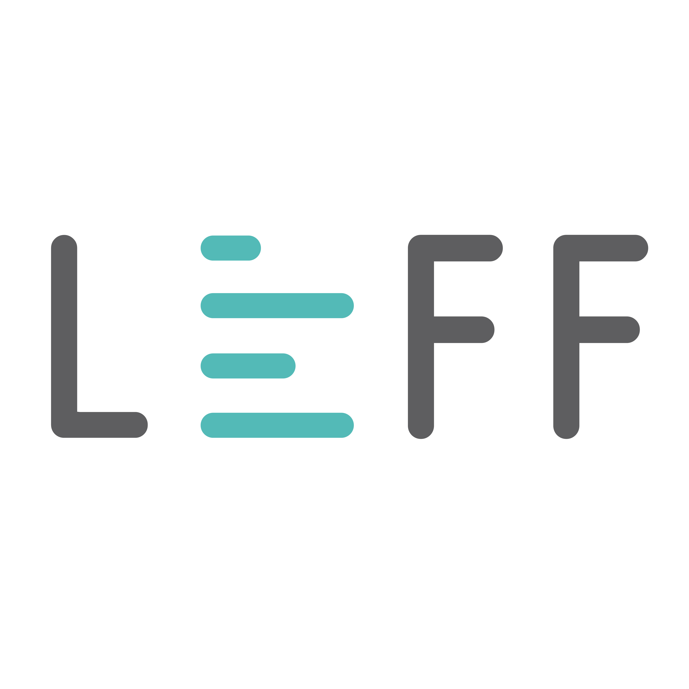

ABAC matrix
Select the blue boxes to view information
Accenture
Bain
BDO USA LLP
Deloitte
EY
KPMG
McKinsey
Compliance
Deals
Digital/
emerging tech
Accenture/Compliance:
New technology and new roles, including compliance officers, are crucial for today's path to compliance.

PwC
Fit for Growth
Government
KYC/AML
The human element
EY/Compliance:
As business models change and regulatory changes mount, it's crucial that companies keep integrity on the agenda. Defining responsibilities is a necessary exercise.
BDO USA LLP/Deals:
Investigative due diligence belongs in the M&A due diligence process. This can help buyers determine whether to walk away from a deal, ascertain the value of the asset, and price the future value of an asset.
Deloitte/Digital/emerging tech:
Natural language processing has been used for compliance activities but natural language generation (NLG) can provide greater efficiencies. NLG tech takes raw data and translates it to prose, which helps compliance teams identify information for relevant reporting, automate processes, get more from their data, and cut down on manual processes.
EY/Digital/emerging tech:
AI has the potential to enhance the AML efforts of financial services institutions, but it must be implemented in a way that supports human activities and offers transparency.
Bain/Fit for Growth:
Organizational complexity, more than a few rogue employees, lies at the heart of recent compliance and risk management breakdowns.
Deloitte/Government:
Fraud, waste, and abuse in govt spending drains billions. Predictive analytics, behavioral economics, and collective intelligence offer agencies innovative ways to address the problem.
KPMG/KYC/AML:
Banks are spending a lot of money on AML and KYC efforts, often with not much to show for it. Institutions can focus on three areas to transform their customer due diligence.
McKinsey/KYC/AML:
In recent years, three factors have heightened the risk banks face when combating financial crimes: greater integration of the world's economies, regulators shifting to terrorism detection, and governments expanding economic sanctions.
PwC/The human element:
PwC makes five bold predictions that show it's time to go beyond compliance and look to creating an ethical culture.
Rationalization is a hidden danger when it comes to defining fraud.